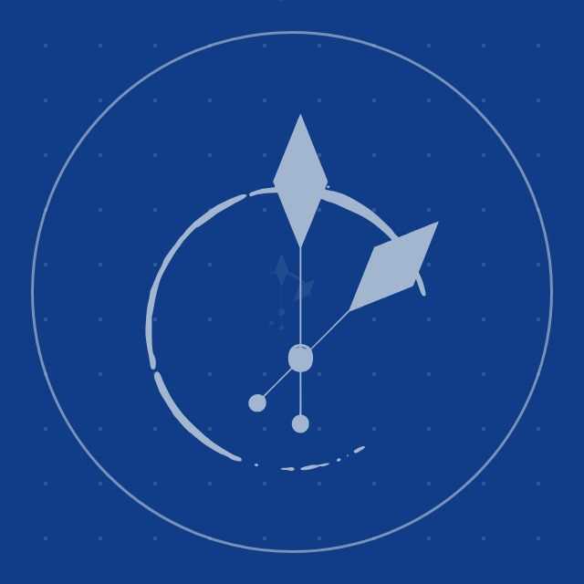
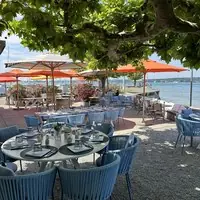
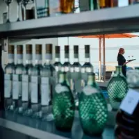
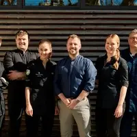
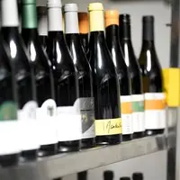

schloessli_bottighofen
schloessli_bottighofen
Ihr Feed bleibt, wie er ist. Darauf bauen die nächsten 48 Beiträge auf, so wie Sie sie nach und nach posten: die Gourmetkreuzfahrt im November, Lunch, Lästermeile und Banketts im Advent, die Winterpause und der Frühling am See. Dazwischen Teller von Monika Huber, die Weine von Jonas Volpert, das Team und die Terrasse.
Kein Foto, das schon auf Ihrem Profil steht, kommt noch einmal vor. Mit dem Schalter sehen Sie Ihren Feed heute und mit den nächsten 48; die Nummern zeigen die Reihenfolge zum Posten. Tippen Sie einen Beitrag an, dann sehen Sie ihn gross und mit Text.


Terrasse
Lästermeile
Team
Wein